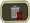
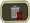
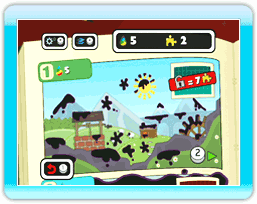
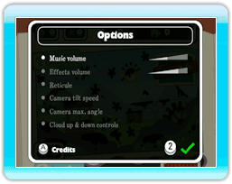

● Écran de sélection du fichier de sauvegarde
Lorsque vous démarrez Fluidity, l’écran de sélection du fichier de sauvegarde s’affiche après une courte animation. Si vous n’avez pas encore joué à Fluidity, utilisez  pour sélectionner un signet marqué New (nouveau) et ainsi créer un nouveau fichier de sauvegarde. Confirmez votre choix en appuyant sur . Un petit tutoriel s’affiche alors pour vous aider à vous familiariser avec le jeu.
pour sélectionner un signet marqué New (nouveau) et ainsi créer un nouveau fichier de sauvegarde. Confirmez votre choix en appuyant sur . Un petit tutoriel s’affiche alors pour vous aider à vous familiariser avec le jeu.
Si vous désirez continuer une partie de Fluidity, sélectionnez le signet contenant votre partie sauvegardée pour reprendre là où vous l’avez quittée.
Une fois que vous avez choisi un signet, choisissez  pour confirmer, ou  à l’aide de pour effacer la partie sauvegardée. Soyez prudent! Les données effacées ne peuvent pas être récupérées.
pour confirmer, ou  à l’aide de pour effacer la partie sauvegardée. Soyez prudent! Les données effacées ne peuvent pas être récupérées.

● Écran de sélection du chapitre
L’Aquaticus est divisé en quatre chapitres. Seul le premier est disponible au début d'une partie. Les chapitres suivants seront débloqués au fur et à mesure que vous ramasserez un certain nombre de Rainbow Drops (gouttes d’arc-en-ciel).
Sélectionnez un chapitre à l’aide de et appuyez sur pour confirmer votre choix.
Chaque chapitre contient un mini-jeu que vous pouvez débloquer en ramassant les pièces de casse-tête () cachées dans les pages de l’Aquaticus. Une fois que vous aurez débloqué un mini-jeu, vous pourrez y accéder en appuyant sur  lorsque le chapitre correspondant est affiché à l’écran (voir p. 13).
lorsque le chapitre correspondant est affiché à l’écran (voir p. 13).

● Menu des options
Vous pouvez accéder au menu des options en appuyant sur  à partir de l’écran de sélection du chapitre. Appuyez vers le haut ou le bas sur pour sélectionner les différentes options et vers la gauche ou la droite pour modifier les paramètres de l'option sélectionnée. Appuyez sur pour confirmer vos changements et retourner à l'écran de sélection du chapitre.
à partir de l’écran de sélection du chapitre. Appuyez vers le haut ou le bas sur pour sélectionner les différentes options et vers la gauche ou la droite pour modifier les paramètres de l'option sélectionnée. Appuyez sur pour confirmer vos changements et retourner à l'écran de sélection du chapitre.
Appuyez sur pour voir le générique du jeu.
 |
 |
 |
 |
À propos de la sauvegarde
À propos de la sauvegarde : Votre progression est sauvegardée automatiquement lorsque vous ramassez une
Rainbow Drop (goutte d'arc-en-ciel) ou quittez un chapitre via le menu de pause.
Si vous désirez effacer une partie sauvegardée, sélectionnez-la à partir de l’écran de sélection du fichier de sauvegarde, puis choisissez . Mais faites attention : une partie effacée ne peut pas être récupérée.
|
Attention :
Effectuer l'une des actions ci-dessous pourrait empêcher la sauvegarde de vos données ou provoquer la perte des données. Ces données ne peuvent pas être récupérées, alors soyez prudent!
-
Éteindre ou réinitialiser la console Wii ou la manette Wii Remote pendant la sauvegarde de données.
-
Déconnecter l’adaptateur CA Wii en cours de jeu.
|
|
 |
 |
 |
 |